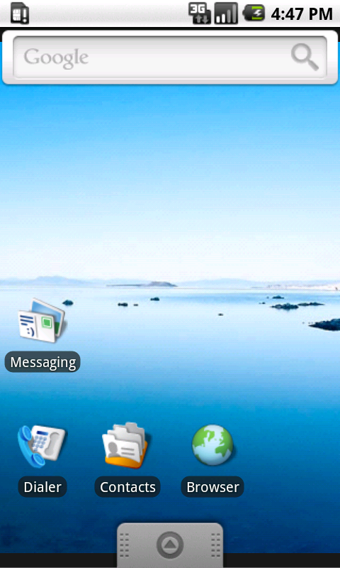
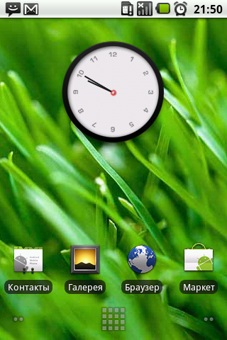
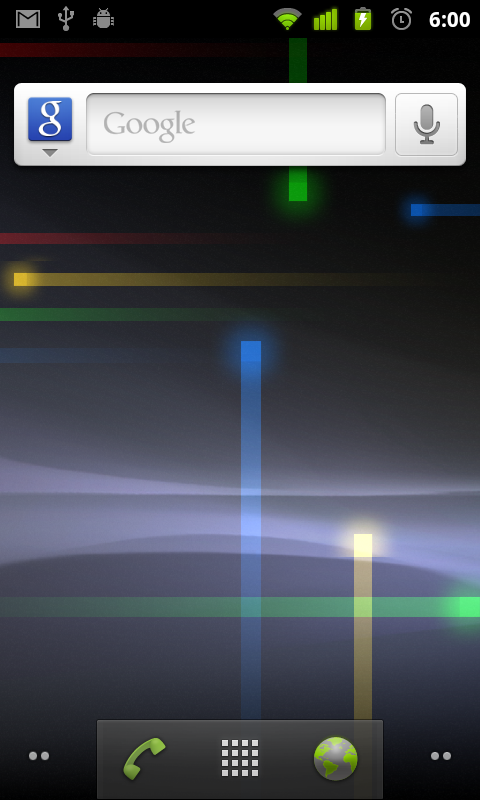
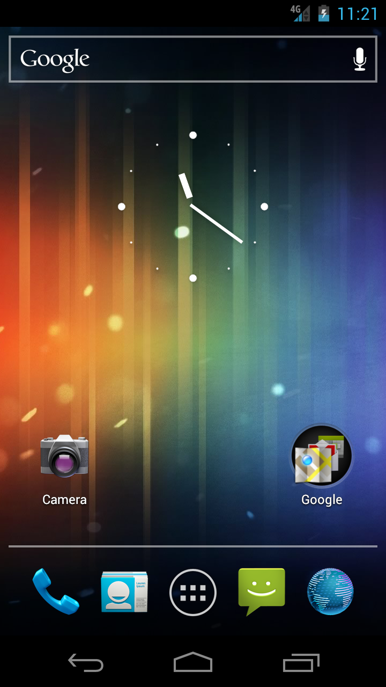
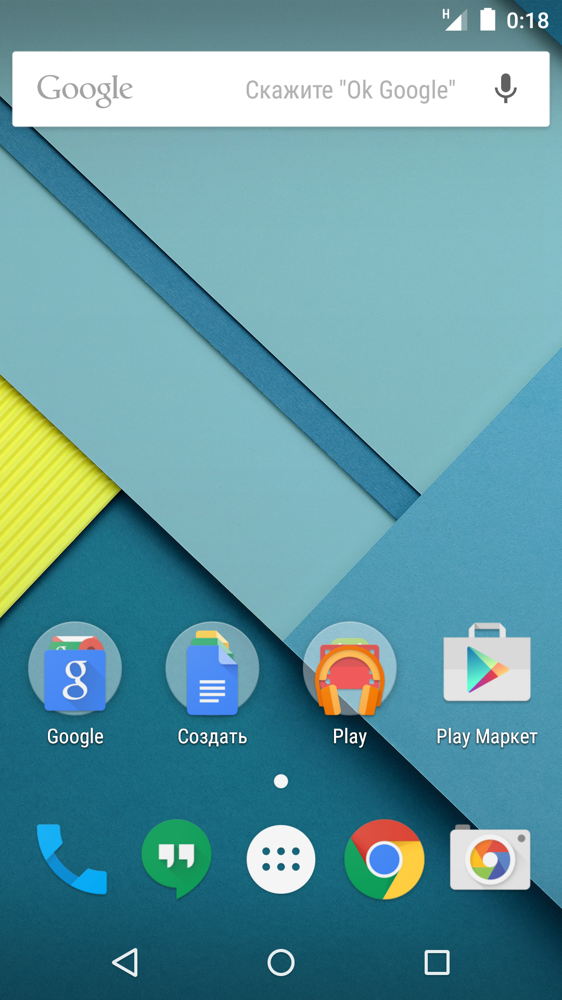
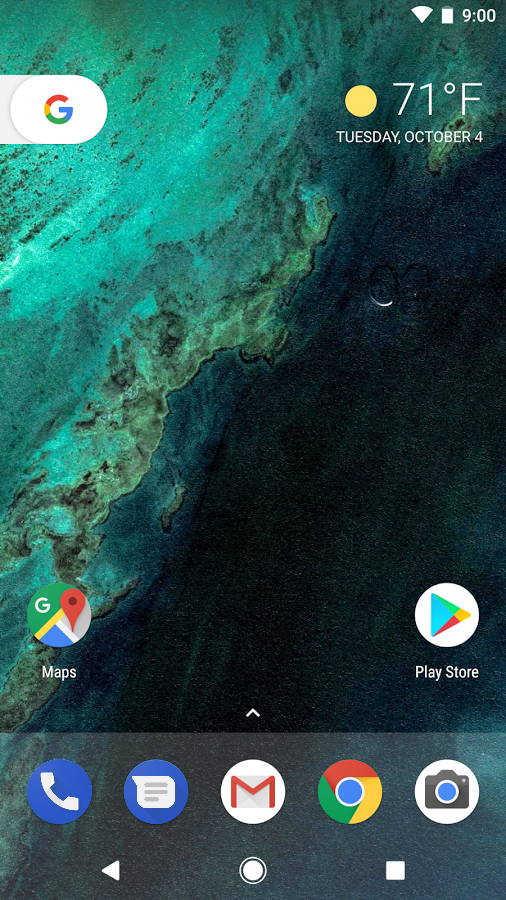
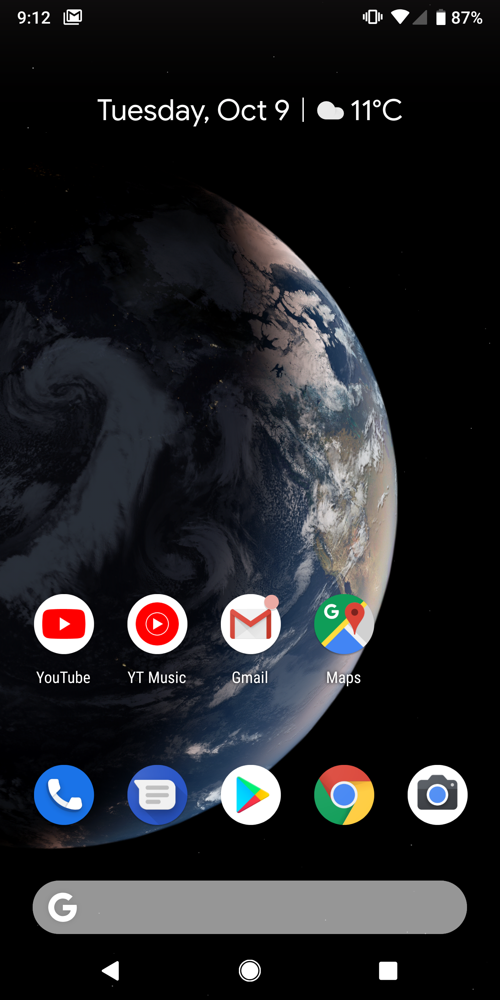
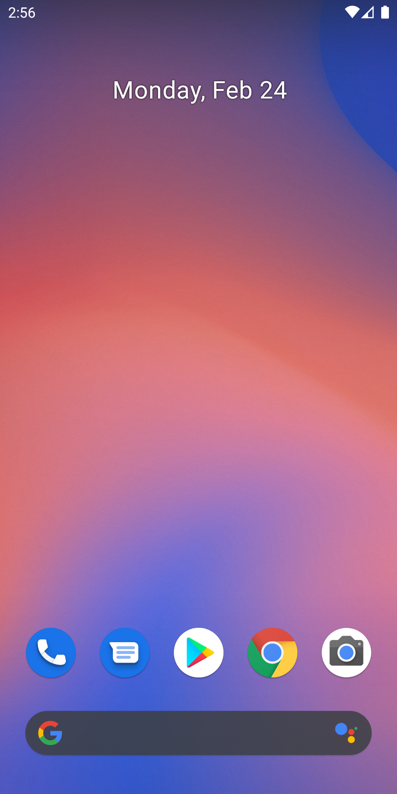
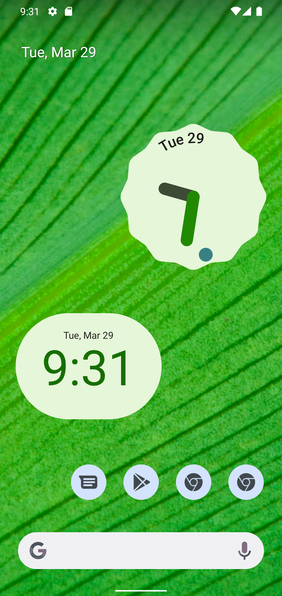

Версии
Основные моменты:
- 23 сентября 2008 — Android 1.0
- 30 апреля 2009 — Android 1.5 "Cupcake"
-
- добавлена виртуальная клавиатура
- добавлена возможность воспроизведеня и записи видео
- добавлена возможность создавать виджеты и папки на главном экране
- 15 сентября 2009 — 1.6 "Donut"
-
- добавлена функция синтеза речи
- 20 мая 2010 — Android 2.2 "Froyo"
-
- оптимизация
- добавлена функция точки доступа
- поддержка отправки файлов в браузере
- поддержка установки приложения на sd-карту
- 6 декабря 2010 года — Android 2.3 "Gingerbread"
-
- поддержка нескольких камер на устройстве
- 22 февраля 2011 — Android 3.0/3.1 "Honeycomb" (предназначена для планштов)
-
- поддержка многоядерных процессоров
- поддержка внешних клавиатур, мышей, джостиков
- 29 октября 2012 — Android 4.0/4.2 "Jelly Bean"
-
- поддержка нескольких профилей
- встроенная функция снимка экрана
- 15 октября 2014 — Android 5.0 "Lollipop"
-
- новый дизайн "Material Design"
- переход к компилятору ART
- поддержка двух SIM-карт
- 29 мая 2015 — Android M (Android 6.0 "Marshmallow")
-
- новая мобильная платежная система "Android pay"
- поддержка сканера отпечатка пальцев
- 22 августа 2016 — Android 7.1.1 "Nougat"
-
- добавлена воможность привести все иконки приложений к единому дизацну
- 6 августа 2018 года — Android 9 "Pie"
-
- 3 сентября 2019 — Android 10 "Q"
-
- поддержка складных смартфонов
- встроенная функция записи экрана
- плавающая панель настроек
- улучшние биометрической аутентификации
- 8 сентября 2020 — Android 11 "R"
-
- 4 октября 2021 — Android 12 "S"
-
- поддержка UWB
- полный контроль за фоновыми приложениями
- март 2022 — Android 12L
-
- улучшенная адаптация к складнм смартфонам
- втроенная функция создания скриншотов с прокруткой
- новый дизайн "Material You"
Подробнее можно прочитать по
ссылке
Галерея









❮
❯